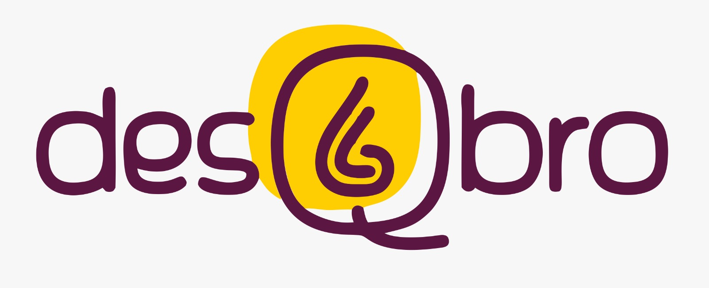

Checklist gratuito
Para directores de escuelas deportivas
10 señales de que tu escuela crece en niños, pero no en formación ni en plata
Más alumnos no siempre es más dinero. Este diagnóstico de 5 minutos te muestra dónde se está yendo la plata y la calidad de tu escuela.
✎Marca con una X cada afirmación que sí describe tu escuela hoy. Sé honesto: nadie más lo va a ver.
1
No sabes de memoria cuánto recaudaste el mes pasado.
Si no conoces la cifra real, tus decisiones se basan en intuición, no en datos.
2
Más del 10% de los papás paga tarde todos los meses.
La morosidad crónica no es un problema de los papás: es un problema de sistema.
3
Cobras por WhatsApp, uno por uno.
Horas que deberías dedicar a formar se van en perseguir pagos.
4
No sabes cuántos niños se retiraron en los últimos 3 meses, ni por qué.
Cada retiro sin explicación es una fuga que vas a tapar con niños nuevos.
5
Hay grupos con más de 20 niños por entrenador.
Más niños por profe significa menos corrección individual y menos progreso.
6
No tienes un plan de formación por edades escrito.
Sin un plan, cada entrenador enseña lo que puede, no lo que el niño necesita.
7
Los papás no reciben ningún informe del avance de su hijo.
El papá que no ve progreso es el primero en dejar de pagar o en retirarlo.
8
Tu respuesta a “la plata no alcanza” siempre es “toca buscar más niños”.
Es el círculo vicioso: más población, menos calidad, más retiros.
9
No separas la plata de la escuela de tu plata personal.
Si todo está mezclado, nunca sabrás si tu escuela realmente es rentable.
10
Si te enfermas una semana, la escuela se desordena.
Una escuela que depende solo de ti no es un negocio: es un trabajo sin descanso.
Total de señales marcadas
/ 10
¿Qué significa tu resultado?
Cuenta tus X y busca tu nivel.
0 – 3Vas bien
Tienes una base sana.
Tu escuela tiene orden y formación. Ahora el reto es medir mejor para crecer sin perder calidad.
4 – 6Hay fugas
Tu escuela está perdiendo plata y alumnos sin que lo notes.
Aún estás a tiempo. Ordenar cobros y mostrar avances a los papás puede cambiar tus números en pocos meses.
7 – 10Urgente
Ordena antes de crecer.
Meter más niños hoy solo hará más grande el problema. Lo primero es el orden administrativo y un plan de formación.
Los 3 números que toda escuela debe mirar cada mes
No midas cuántos niños tienes. Mide esto:
1
Permanencia
¿Cuántos niños que entraron hace 6 meses siguen contigo?
Un niño que se queda 2 años vale más que 5 que entran y se van.
2
Recaudo real vs. esperado
No lo que te deben pagar, sino lo que realmente entró.
Si la diferencia pasa del 10%, tu problema es de orden, no de ventas.
3
Evidencia de formación
¿Puedes mostrarle a cada papá, con datos, cómo avanzó su hijo?
El papá que ve progreso paga a tiempo y te recomienda.
“Formar bien también es un buen negocio. La formación es tu mejor estrategia de cobro.”
— Cristian Rivera, 30 años formando deportistas de base en fútbol y natación
¿Marcaste 4 o más? Revisemos tu escuela juntos.
Escríbeme por WhatsApp con tu resultado y te digo por dónde empezar a ordenar cobros, permanencia y formación.
Escribir por WhatsApp+57 324 470 2095
Más contenido para directores en YouTube: @desqbro · Neiva, Colombia